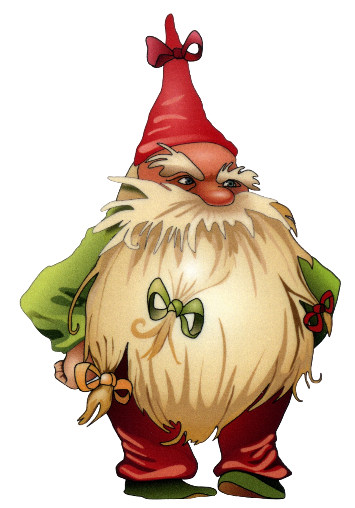
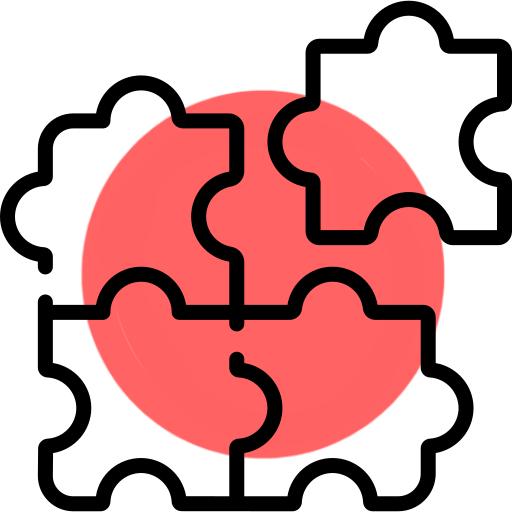

Сокровища Деда Музея
Сокровища Деда Музея
Ваш ребёнок не знает, чем заняться?
Или всё время сидит в телефоне...
...но не получает знаний?
Тогда предложите ему нашу игру "Сокровища Деда Музея"
 Наша игра
Обучает
Развивает
Воспитывает
Развлекает
Студенты Нижнетагильского технологического института разработали мобильную игру. Она расскажет вашему ребенку о достопримечательностях Нижнего Тагила. В игре 12 локаций, каждая из которых соответствует музею. На каждой локации есть тематические уровни, которые понравятся вашему ребенку. Также во время путешествия детей будет сопровождать сам Дед Музей. Время в телефоне должно проходить с пользой!